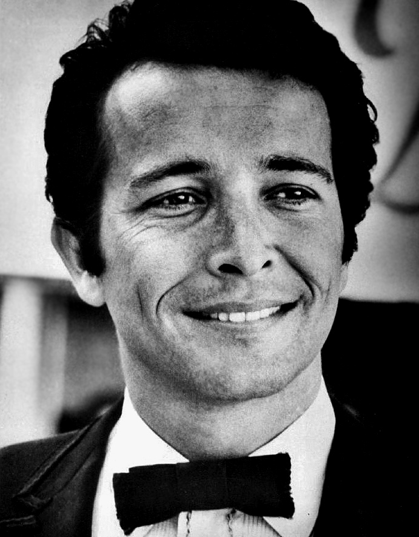

Herb Alpert & The Tijuana Brass made a trumpet-led, Mexican-flavored instrumental sound that ruled mid-1960s album charts.
A 1962 single called "The Lonely Bull" started it, and the money from it built A&M Records.
By 1968 Alpert had a No. 1 single of his own as a singer.

Table of Contents
- The Lonely Bull and the Birth of A&M
- Whipped Cream and the Tijuana Brass Sound
- Spanish Flea, Zorba and the Live Band
- This Guy's in Love with You
- After 1969 and Legacy
- FAQ
The Lonely Bull and the Birth of A&M
Herbert Alpert was born on March 31, 1935, in Los Angeles, and raised in Boyle Heights.
In 1962 he and Jerry Moss formed a label called Carnival Records.
They put out two singles before learning that another label already used the name.
They renamed the company A&M, from their initials.
A Garage Experiment
Alpert first tried "The Lonely Bull" in his garage, overdubbing his own trumpet.
Sol Lake wrote the song.
The finished record added a crowd shouting "Olé" in a bullfight arena in Mexico.
Wrecking Crew session players recorded it at Conway Recording Studios in Hollywood.
Alpert paid for the single himself.
A Top Ten Debut
The single came out in August 1962 and reached No. 6 on the Hot 100.
The album followed in December 1962 and peaked at No. 10 on the Billboard 200.
It was the first big hit for the new label.
The 1962 year guide shows what else was on the radio that fall.
Whipped Cream and the Tijuana Brass Sound
The band was at first just Alpert multitracking himself.
His sound mixed mariachi-style trumpets with a light pop and jazz pulse.
It fits neatly into our 1960s jazz and easy listening guide.
A Taste of Honey
Bobby Scott and Ric Marlow wrote "A Taste of Honey" for the 1960 Broadway version of the play of the same name.
Alpert's version came out in August 1965 and reached No. 7 on the Hot 100.
It also spent five weeks at No. 1 on the Easy Listening chart.
The Beatles had already recorded the song for their 1963 debut album.
Check the 1965 year guide for the rest of that year.
The Album and the Cover
Whipped Cream & Other Delights came out in April 1965.
Alpert and Moss produced it at Gold Star Studios in Hollywood.
Billboard shows it at No. 1 for eight weeks, starting November 27, 1965.
It was also the No. 1 album of 1966 on the year-end chart.
Wikipedia reports US sales above six million copies.
Model Dolores Erickson posed on the cover, created by A&M art director Peter Whorf.
Spanish Flea, Zorba and the Live Band
Success in 1965 turned the studio project into a touring ensemble.
A 1966 photo shows Alpert with Tonni Kalash, John Pisano, Nick Ceroli and Pat Senatore.
Going Places and What Now My Love followed Whipped Cream to No. 1 on the album chart.
A short film built around the group won the Academy Award for Best Animated Short Film in 1967.
Spanish Flea
Julius Wechter wrote "Spanish Flea," with lyrics by his wife, Cissy Wechter.
The original was recorded on August 13, 1965, for the album Going Places.
The 1966 single reached No. 27 on the Hot 100 and No. 4 on the Adult Contemporary chart.
In the US it became closely tied to the game show The Dating Game.
Check the 1966 year guide for more from that year.
| Play | |||
|---|---|---|---|
| "The Lonely Bull" | August 1962 | Hot 100 No. 6 | |
| "A Taste of Honey" | August 1965 | Hot 100 No. 7 | |
| "Zorba the Greek" | 1966 | Hot 100 No. 11 | |
| "Spanish Flea" | 1966 | Hot 100 No. 27 | |
| "This Guy's in Love with You" | May 1968 | Hot 100 No. 1 |
This Guy's in Love with You
On April 22, 1968, CBS aired the special The Beat of the Brass.
In it, Alpert sang to his wife, Sharon, while walking through Malibu.
Viewer calls after the broadcast led A&M to release the song as a single.
Burt Bacharach and Hal David wrote the song, and Bacharach arranged the record.
It came out in May 1968 and hit No. 1 on the Hot 100 on June 22, 1968.
It held that spot for four weeks and led the Easy Listening chart for ten.
In the UK it peaked at No. 3.
The album The Beat of the Brass also reached No. 1.
See the 1968 year guide for that summer's charts.
Herb Alpert & The Tijuana Brass After 1969
Alpert disbanded the group in 1969 and stopped performing in public.
A&M kept growing without him.
From 1966 the label worked from the grounds of the old Charlie Chaplin Studios on La Brea Avenue.
PolyGram bought A&M in 1989 for $500 million.
The honors that followed include:
- 1966: Record of the Year Grammy for "A Taste of Honey"
- 1967: Academy Award for Best Animated Short Film
- 2006: Rock and Roll Hall of Fame, with Jerry Moss, as non-performers
- Estimated career sales of 72 million records, per Wikipedia
Alpert returned to number one in 1979 with the instrumental "Rise."
Few instrumentalists ever sold records at the scale he did in the 1960s.
FAQ
What was the Tijuana Brass's biggest hit?
"This Guy's in Love with You" reached No. 1 on the Hot 100 on June 22, 1968, and stayed there for four weeks.
It was a solo vocal by Alpert, not an instrumental.
Burt Bacharach and Hal David wrote it.
Did Herb Alpert found A&M Records?
Yes.
Alpert and Jerry Moss formed the label in 1962 as Carnival Records.
They renamed it A&M, from their initials, after learning another label already used the name.
What is Whipped Cream & Other Delights?
It is the 1965 album that included "A Taste of Honey."
It reached No. 1 and was the top album of 1966 on Billboard's year-end chart.
The cover model was Dolores Erickson.
Who wrote Spanish Flea?
Julius Wechter wrote "Spanish Flea."
It first appeared on the 1965 album Going Places.
The single reached No. 27 on the Hot 100 in 1966.
Did the Tijuana Brass win a Grammy?
Yes.
At the 1966 Grammys, "A Taste of Honey" won Record of the Year.
Grammy.com also lists the group as winner for Best Instrumental Arrangement that year.
The sound was light, but the sales were enormous.
The full story of Herb Alpert & The Tijuana Brass is on Wikipedia.
Back to the 1960smusic.net homepage to explore every genre of the decade.